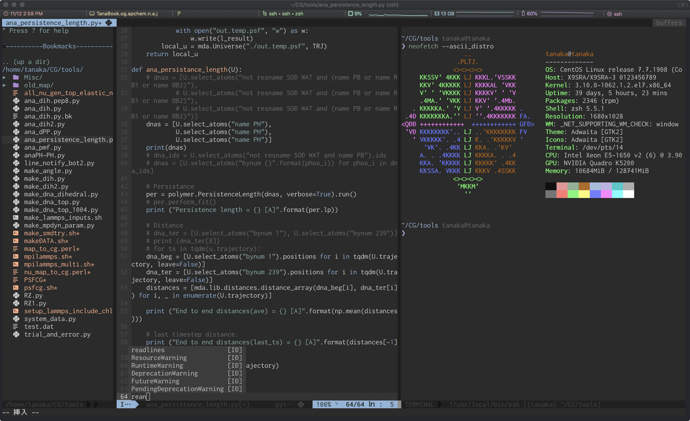

vi¶
このページは¶
対象者
これからプログラムを書く方
これからvimを使い始めようという人
vimにが使いづらいと思っている人
期待される成果
vimが少しでも好きになる
vim教に入信できる
emacs, VSCodeを捨てることができる。
！注意！¶
以降、viとvimは同じものを指すとする。ただし、viとvimで違うものが起動してしまうことがあるので、エイリアスを当てておくことをおすすめする。(以下を~/.bashrcに追記する。)
alias vi='vim'
インストール¶
Linux¶
おそらくデフォルトでインストールされていると思うが、もしインストールされていない場合はyumからインストールする。
sudo yum -y update
sudo yum -y install vim
Mac¶
バッケージ管理用にHomebrewがインストールされているなら、
brew update
brew install lua
brew install vim
Windows¶
Cygwinをインストールする際にパッケージを追加できると思うので、ここで追加しよう。
使い方¶
サンプルのテキストファイルを用意したので、各自適当な場所にダウンロードしてほしい。
viを起動するためには、sample.datがあるディレクトリに行って、
vi sample.dat
で起動できる。
またレベル別に
Beginner
Easy
Normal
Hard
Lunatic
Phantasm
の6レベルを用意した。初心者はBeginnerからはじめてほしい。
Beginner¶
モード¶
vimにはモードという概念があります。
カーソルの移動や保存等を行うノーマルモード
文字入力用のインサートモード
初心者は自分がどちらのモードにいるかわからなくなりがちです。 わからなくなったらescを連打するとノーマルモードに戻ることができます。
手順は、
（ノーマルモードで）編集したい場所まで移動
iを押下してインサートモードに入り、文章を編集
escを押下してノーマルモードに戻る。
これを繰り返して文章を編集していきます。
キーバインド¶
| Key | 動作 |
|---|---|
| i | インサートモードに入る |
| :wq | ファイルを保存して終了する |
| :q! | ファイルを保存せず終了する |
| esc | 困ったら連打するとノーマルモードになる。 インサートモードを抜ける |
とりあえずこれらを利用することで、テキストの編集や保存ができると思います。
チェックリスト¶
vimの起動ができるインサートモードに入れる
ファイルを保存してvimを終了できる
インサートモードかノーマルモードへ移行できる
Easy¶
超初心者のキーバインドを覚えたら、次はコピペや移動などを覚えよう。
キーバインド¶
| Key | 動作 |
|---|---|
| dd | １行切り取り |
| yy | １行コピー |
| p | コピーしたものを貼り付け |
| u | 1手順戻る |
| Ctrl+r | 1手順進む |
u, Ctrl+rはwordの元に戻す、やり直しみたいなものです。
キーバインド（カーソルの移動に関して）¶
| Key | 動作 |
|---|---|
| k | ↑ |
| j | ↓ |
| l | → |
| h | ← |

おそらく最近のvimでは、矢印キーを使っても移動は可能です。しかし、この移動法を覚えることで入力速度は格段に向上します。ある程度文字入力ができるようになったら、矢印を使わずに移動の練習をしてみてください。
チェックリスト¶
1行コピーができるコピーしたものを貼り付けられる
切り取りができる
矢印キーを使わずに移動ができる。
元に戻したり進めたりできる
Normal¶
移動もできるし、コピへなどもマスターしたあなたへ
vimには数多いコマンドがある。ここでは知っておくと便利ものを紹介する。ポイントは、無理に覚えようとせず何度もここに戻ってきて確認することである。
キーバインド（文字操作）¶
| Key | 動作 |
|---|---|
| x | 1文字削除 |
| o | 次行を新規行として挿入してインサートモードへ |
| /検索したい文字 | 文書内から文字を検索 |
| n | （検索後に）次の検索候補へ移動 |
/検索したい文字は頻繁に使うことになるだろう。文字を入力し終えたらEnterキーも忘れずに
キーバインド（移動）¶
| Key | 動作 |
|---|---|
| w | 次の単語の先頭へ |
| b | 前の単語の先頭へ |
| gg | ファイルの先頭へ |
| G | ファイルの最終行へ |
チェックリスト¶
検索ができる検索候補を移動できる
単語ごとの移動ができる
ファイルの先頭、末尾に移動できる
Hard¶
vimの設定¶
これまで、様々なコマンドやキーバインドを覚えてもらいました。しかし、なんでこんな使いづらくてダサいものを使っているのか不思議に思った人も多いだろう。
しかしvimは様々なカスタマイズが可能である。
試しに、ノーマルモードで:set numberと入力して（エンターを押して）みよう。
左に行番号が表示されただろうか。
また、:set cursorlineと入力することで現在居る行にアンダーラインを表示できる。
警告
しかしこれらの設定は、vimを終了すると失われる。
これらの設定をデフォルトにするためには、ホームディレクトリに.vimrcというファイルを配置し、そこに設定を書き込むことで毎回反映される。
.vimrc¶
.vimrcファイルを開くには、vi ~/.vimrcとする。試しに、以下を書き込んでみよう。
set number
set cursorline
書き込んで保存したあと、サンプルファイルを開いて見よう。行番号とカーソルラインが表示されているはずだ。
以下、筆者がデフォルトとしている設定である。コピペして追加してもいいが、時間があるならそれぞれどんな効果があるか調べて見よう。
set encoding=utf-8
set fileencoding=utf-8
set fileencodings=utf-8
set ambiwidth=double " □や○文字が崩れる問題を解決
set bomb
set binary
set ttyfast
set backspace=indent,eol,start
set tabstop=4
set softtabstop=4
set shiftwidth=4
set autoindent " 改行時に前の行のインデントを継続する
set smartindent " 改行時に前の行の構文をチェックし次の行のインデントを増減する
set shiftwidth=4 " smartindentで増減する幅
set expandtab
set splitright
set splitbelow
set hidden
set hlsearch
set whichwrap=b,s,h,l,<,>,[,],~ " カーソルの左右移動で行末から次の行の行頭への移動が可能になる
set cursorline " カーソルラインをハイライト
set showmatch " 括弧の対応関係を一瞬表示する
set matchtime=1 " 0.1秒だけ
set incsearch
set ignorecase
set smartcase
set nobackup
set noswapfile
set fileformats=unix,dos,mac
set ruler
set number
set wildmenu " コマンドモードの補完
set history=5000 " 保存するコマンド履歴の数
set gcr=a:blinkon0
set scrolloff=3
set laststatus=2
set showmode " 現在のモードを表示
set showcmd " 打ったコマンドをステータスラインの下に表示
set modeline
set modelines=10
set pumheight=10 "if value is 0 , show menu all
set title
set titleold="Terminal"
set titlestring=%F
set statusline=%F%m%r%h%w%=(%{&ff}/%Y)\ (line\ %l\/%L,\ col\ %c)\
set autoread
set noerrorbells visualbell t_vb=
set clipboard+=unnamed,autoselect
set mouse=a
set whichwrap=b,s,h,l,<,>,[,]
set t_Co=257 " iTerm2など既に256色環境なら無くても良い
チェックリスト¶
.vimrcを編集した自分の好みの設定を追加した
Lunatic¶
ここまで来たら、あとは「知らなくても問題ないが、知っているとイキれる」くらいのものを紹介する。
文字置換¶
vimで文字を置換する基本のコマンドは、:s/置換前/置換後/である。試しに、サンプルファイルのvimという文字をvim_tsuyoiに置換してみよう。
この方法では、カーソルのある行の一番はじめのvimという文字が置換される。
しかし、文章全体で置換したいことも多いだろう。その場合は、:%s/置換前/置換後/である。(sの前に%を追加)
文頭のvimが置換されただろう。実は、何も設定しないと1行に付き1回しか置換を行わない。行に含まれるすべての文字を置換するには、:s/置換前/置換後/gである。(最後に/gを追加)
まとめると、文章内すべての文字を置換するためには、
:%s/置換前/置換後/g
である。
水平、垂直分割¶
:vsとすると現在のファイルを横に追加で表示し、:splitとすると下に追加で表示できる。また:vs 別ファイル名前とすると2つのファイルを同時に見ながら編集できる。
ウインドウを移動する場合は以下のようなコマンドが使えます。
Ctrl-w w: 次のウインドウへ
Ctrl-w W: 前のウインドウへ
Ctrl-w h: 左へのウインドウへ(j/k/lなら下/上/右へ)
ウインドウを閉じるときは:qとタイプします。
画面スクロール¶
zz: 現在のカーソル位置を中央となるように画面がスクロール。
zt: 現在のカーソル位置が一番上となるように画面がスクロール。
Ctrl + u： 半画面分戻る。
Ctrl + d： 半画面分進む。
Ctrl + b： 1画面分戻る。
Ctrl + f： 1画面分進む。
インデント¶
>>: インデントを追加。
<<: インデントを削除。
チェックリスト¶
文字の置換が自由自在画面分割ができる
スクロールが得意である。
Phantasm¶
これ以上のカスタマイズは通常のvimでは不可能だろう。しかし、プラグインを導入することでさらなるカスタマイズが可能になる。
(参考図)

ただし、いろいろ理解しておくこともあるため、注意も必要である。
インストール¶
お手持ちの環境で、vim --versionとするといろいろ表示されるが、-pythonや-python3となっているだろうか？
これは、pythonなどを無効にしてインストールしたという意味である。これから導入するプラグインは、これらが有効であるという前提のものが多い。このため、先にvimのインストールをし直しておく。
linux¶
cd ~
sudo yum install https://centos7.iuscommunity.org/ius-release.rpm # リポジトリ追加
sudo yum install openssl-devel readline-devel zlib-devel # リポジトリ追加
sudo yum install perl-ExtUtils-Embed # パッケージの追加
sudo yum install lua-devel ncurses-devel # パッケージの追加
sudo yum install python-devel python36u python36u-libs python36u-devel python36u-pip # パッケージの追加
sudo yum install vim python cmake go mono rust
curl -sL https://rpm.nodesource.com/setup_11.x | bash - # nodejsのみ別途インストール
sudo yum install nodejs
sudo yum remove vim-enhanced # 古いvimを消す
cd /tmp
git clone https://github.com/vim/vim
cd vim
sudo ./configure \
--enable-fail-if-missing \
--with-features=huge \
--disable-selinux \
--enable-luainterp \
--enable-perlinterp \
--enable-pythoninterp=dynamic \
--with-python-config-dir=/usr/lib64/python2.7/config \
--enable-python3interp=dynamic \
--with-python3-config-dir=/usr/lib64/python3.6/config-3.6m-x86_64-linux-gnu \
--enable-cscope \
--enable-fontset \
--enable-multibyte \
vi_cv_path_python3=/usr/bin/python3.6
sudo make
sudo make install
これで、vimがインストールされたはずだ。
vim --versionとしたときに
python
python3
lua
これら3つが+になっていることを確認してほしい。
mac¶
brew update
brew install vim python cmake go mono node rust
だけでいけると思う。
これで、vimがインストールされたはずだ。
vim --versionとしたときに
python
python3
lua
これら3つが+になっていることを確認してほしい。
プラグイン¶
CentOSがyum(CentOS8からはdnf)でパッケージをインストールできるように、vimにもプラグインを追加できるマネージャーがある。
代表的なものは、
などである。ネットで検索するとNeoBundleなどの記事が多く見つかると思うが、NeoBundleは作者がdein.vimに乗り換えるようアナウンスしている。
ここでは軽くて記述が楽なvim-plugを使うことにする。
vim-plugの使い方¶
vimrcへ追記する必要がある
call plug#begin()
と
call plug#end()
の間に
Plug ~のようにプラグインを追加していくシステムのようです。
例えばこんな感じ
call plug#begin()
Plug 'tpope/vim-sensible'
call plug#end()
.vimrcを保存して終了
.vimrcに記述しただけではプラグインが反映されないので、Installする必要があります。 どうするかというと、、、
vimを起動しコマンドで
:PlugInstall
と叩くと各プラグインのインストールが開始します。
これで正常終了した感じで表示されればプラグインの機能が使えるようになります。
.vimrc¶
筆者の.vimrcは以下のようにダウンロード出来る。
cd ~
mv .vimrc .vimrc_backup # 現在の.vimrcをバックアップ
wget https://raw.githubusercontent.com/tanaty5828/dotfiles/master/.vimrc
このあと、以下のコマンドを実行する必要がある。
cd ~/.vim/plugged/YouCompleteMe/
/usr/bin/python3.6 ./Install.py -all
vi +PlugInstall +qall
おそらく最強のvimが完成するだろう
注意¶
この.vimrcではアイコンや特殊文字を使うため、ターミナルフォントにそれらが使えるものを指定したほうがいい。というかしないと文字化けがひどい。筆者が独自に合成したフォントは以下。